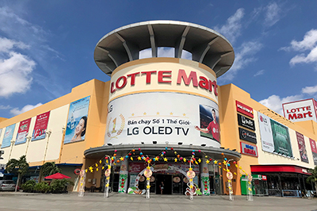
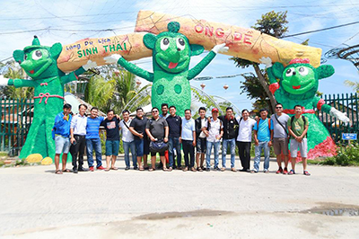
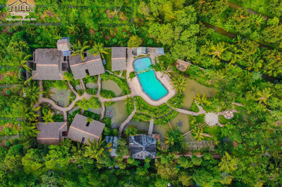
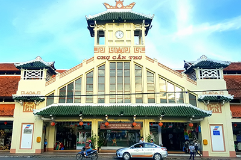
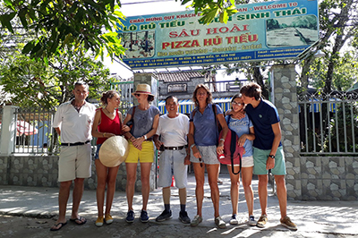
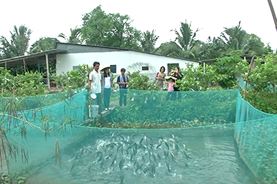

Tour 2 ngày: Nghỉ Homestay
Ngày 1 · 6 địa điểm

Top 10 chợ ấn tượng nhất thế giới.
Địa chỉ: P. Cái Răng, TP. Cần Thơ

Trung tâm thương mại lớn, có rạp chiếu phim.
Địa chỉ: 84 Mậu Thân, P. Cái Khế

Trải nghiệm quy trình làm hủ tiếu truyền thống.
Địa chỉ: Mỹ Khánh, P. An Bình

Ngôi chùa lớn, kiến trúc truyền thống.
Địa chỉ: Đường Mỹ Nhơn, P. An Bình

Khu du lịch sinh thái miệt vườn.
Địa chỉ: 26 Ấp Mỹ Ái, P. An Bình

Khu nghỉ dưỡng sinh thái độc đáo.
Địa chỉ: 02 Ấp Nhơn Lộc, Xã Nhơn Ái
Ngày 2 · 4 địa điểm

Biểu tượng nổi tiếng của Cần Thơ.
Địa chỉ: P. Ninh Kiều

Công trình hiện đại, thu hút du khách.
Địa chỉ: P. Ninh Kiều

Kiến trúc giao thoa Việt – Hoa – Khmer.
Địa chỉ: 32 Hai Bà Trưng, P. Ninh Kiều

Chợ cổ với kiến trúc từ năm 1915.
Địa chỉ: Hai Bà Trưng, P. Ninh Kiều
Tour 1 ngày: Đường bộ & sông
Ngày 1 · 6 địa điểm

Ngôi nhà kiểu Đông Dương đầu thế kỷ XX.
Địa chỉ: 144 Bùi Hữu Nghĩa, P. Bình Thủy

Công trình kiến trúc cổ Long Tuyền Cổ Miếu.
Địa chỉ: 46/11A, P. Bình Thủy

Cù lao xanh mát bên sông Hậu.
Địa chỉ: P. Tân Lộc
Nơi trú ngụ của hơn 300.000 con cò.
Địa chỉ: P. Thốt Nốt
Kiến trúc giao thoa Việt – Hoa – Khmer.
Địa chỉ: 32 Hai Bà Trưng, P. Ninh Kiều
Chợ cổ với kiến trúc từ năm 1915.
Địa chỉ: Hai Bà Trưng, P. Ninh Kiều
Tour 1 ngày: Đường sông nước
Ngày 1 · 5 địa điểm
Top 10 chợ ấn tượng nhất thế giới.
Địa chỉ: P. Cái Răng

Lò hủ tiếu truyền thống, đặc sản Pizza Hủ Tiếu.
Địa chỉ: 476 Lộ Vòng Cung, P. An Bình
Ngôi chùa lớn, kiến trúc truyền thống.
Địa chỉ: Đường Mỹ Nhơn, P. An Bình

Khu du lịch miệt vườn nổi tiếng.
Địa chỉ: 335 Lộ Vòng Cung, Xã Mỹ Khánh
Biểu tượng nổi tiếng của Cần Thơ.
Địa chỉ: P. Ninh Kiều
Tour 2 ngày: Nghỉ cộng đồng
Ngày 1 · 4 địa điểm
Ngôi nhà kiểu Đông Dương đầu thế kỷ XX.
Địa chỉ: 144 Bùi Hữu Nghĩa, P. Bình Thủy

Thương hiệu cà phê Việt nổi tiếng.
Địa chỉ: 36 Đại Lộ Hòa Bình, P. Ninh Kiều

Vườn trái cây đặc sản miền Tây.
Địa chỉ: 166 Bình Phó B, P. Long Tuyền

Mô hình du lịch cộng đồng trên sông Hậu.
Địa chỉ: Khu Vực I, P. Bình Thủy
Ngày 2 · 3 địa điểm
Ngôi chùa lớn, kiến trúc truyền thống.
Địa chỉ: Đường Mỹ Nhơn, P. An Bình
Khu du lịch miệt vườn nổi tiếng.
Địa chỉ: 335 Lộ Vòng Cung, Xã Mỹ Khánh
Biểu tượng nổi tiếng của Cần Thơ.
Địa chỉ: P. Ninh Kiều